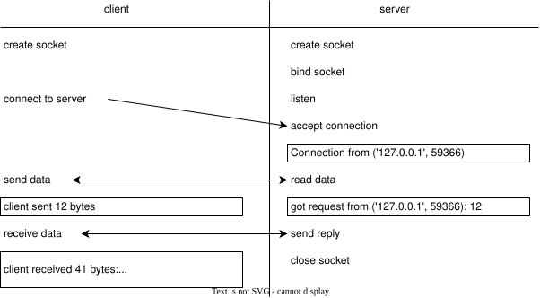

We want to make information available to others
Understanding how a web server works will help us do this
Most networked computers use Internet Protocol (IP)
Defines multiple layers on top of each other
Transmission Control Protocol (TCP/IP) makes communication between computers look like reading and writing files
A sockets is one end of a point-to-point communication channel
IP address identifies machine
93.184.216.34port identifies a specific connection on that machine
A number in the range 0–65535
Some numbers reserved for well-known applications
E.g., port 80 is usually a web server
IP addresses are hard to remember
Domain Name System (DNS) translates names like third-bit.com
into numerical identifiers
import socket
CHUNK_SIZE = 1024
SERVER_ADDRESS = ("localhost", 8080)
message = "message text"
sock = socket.socket(socket.AF_INET, socket.SOCK_STREAM)
sock.connect(SERVER_ADDRESS)
sock.sendall(bytes(message, "utf-8"))
print(f"client sent {len(message)} bytes")
received = sock.recv(CHUNK_SIZE)
received_str = str(received, "utf-8")
print(f"client received {len(received)} bytes: '{received_str}'")
import socket
CHUNK_SIZE = 1024
def handler():
host, port = socket.gethostbyname("localhost"), 8080
server_socket = socket.socket()
server_socket.bind((host, port))
server_socket.listen(1)
conn, address = server_socket.accept()
print(f"Connection from {address}")
data = str(conn.recv(CHUNK_SIZE), "utf-8")
msg = f"got request from {address}: {len(data)}"
print(msg)
conn.send(bytes(msg, "utf-8"))
conn.close()
# ...2 lines not shown...

import socketserver
CHUNK_SIZE = 1024
SERVER_ADDRESS = ("localhost", 8080)
class MyHandler(socketserver.BaseRequestHandler):
def handle(self):
data = self.request.recv(CHUNK_SIZE)
cli = self.client_address[0]
msg = f"got request from {cli}: {len(data)}"
print(msg)
self.request.sendall(bytes(msg, "utf-8"))
if __name__ == "__main__":
server = socketserver.TCPServer(SERVER_ADDRESS, MyHandler)
server.serve_forever()
Server uses self.request.recv(CHUNK_SIZE)
What if client sends more data than that?
Allocating a larger buffer just delays the problem
Better solution: keep reading until there is no more data
class FileHandler(socketserver.BaseRequestHandler):
def handle(self):
print("server about to start receiving")
data = bytes()
while True:
latest = self.request.recv(CHUNK_SIZE)
print(f"...server received {len(latest)} bytes")
data += latest
if len(latest) < CHUNK_SIZE:
print("...server breaking")
break
print("server finished received, about to reply")
self.request.sendall(bytes(f"{len(data)}", "utf-8"))
def send_file(conn, filename):
with open(filename, "rb") as reader:
data = reader.read()
print(f"client sending {len(data)} bytes")
total = 0
while total < len(data):
sent = conn.send(data[total:])
print(f"...client sent {sent} bytes")
if sent == 0:
break
total += sent
print(f"...client total now {total} bytes")
return total
Try to send all remaining data
Advance marker by amount actually sent and re-try
client sending 1236 bytes
...client sent 1236 bytes
...client total now 1236 bytes
client main sent 1236 bytes
client main received 1236 bytes
True
server about to start receiving
...server received 1024 bytes
...server received 212 bytes
...server breaking
server finished received, about to reply
Manual testing:
Better: use a mock object instead of a real network connection
class LoggingHandler(socketserver.BaseRequestHandler):
def handle(self):
self.debug("server about to start receiving")
data = bytes()
while True:
latest = self.request.recv(BLOCK_SIZE)
self.debug(f"...server received {len(latest)} bytes")
data += latest
if len(latest) < BLOCK_SIZE:
self.debug("...server breaking")
break
self.debug("server finished received, about to reply")
self.request.sendall(bytes(f"{len(data)}", "utf-8"))
# ...2 lines not shown...
def debug(self, *args):
print(*args)
class MockHandler(LoggingHandler):
def __init__(self, message):
self.request = MockRequest(message)
def debug(self, *args):
pass
Don't upcall constructor of LoggingHandler
Don't want to trigger all of the library's socket machinery
A constructor that records the data we're going to pretend to have received over a socket and does other setup
A recv method with the same signature as the real object's
A sendall method whose signature matches the real thing's
class MockRequest:
def __init__(self, message):
self._message = message
self._position = 0
self._sent = []
def recv(self, max_bytes):
assert self._position <= len(self._message)
top = min(len(self._message), self._position + BLOCK_SIZE)
result = self._message[self._position:top]
self._position = top
return result
def sendall(self, outgoing):
self._sent.append(outgoing)
def test_short():
msg = bytes("message", "utf-8")
handler = MockHandler(msg)
handler.handle()
assert handler.request._sent == [bytes(f"{len(msg)}", "utf-8")]